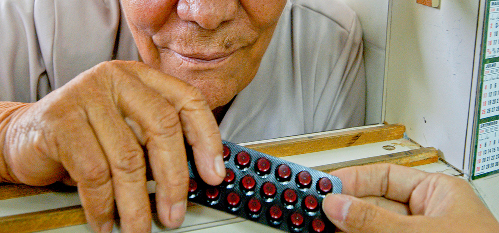

Na abordagem ao usuário dos serviços de saúde, a habilidade da comunicação é essencial para que o conhecimento do profissional de saúde advindo da MBE possibilite as escolhas da pessoa conforme suas necessidades e valores, pelo MCCP. É desejável ter algumas habilidades tais como empatia, isenção de julgamento, capacidade de criar vínculo, de motivar e estimular o autocuidado.
Módulo 2 | Aula 3 O cuidado e o autocuidado na APS: espaço para a ampliação dos níveis de LS
Tópico 2
O cuidado centrado na pessoa e a LS
Um profissional de saúde durante sua atuação de atenção e zelo dedicados a um usuário do sistema de saúde está exercendo o conceito de cuidado aqui definido. Porém, para que este cuidado esteja alinhado à percepção da complexidade do indivíduo, precisa-se adotar o cuidado centrado na pessoa, que possibilita decidir as ações de cuidado conjuntamente.
Um dos papéis do profissional de saúde nesta perspectiva é o de fornecer as informações em linguagem clara e acessível, garantindo a compreensão para que o usuário consiga realizar suas próprias escolhas, bem como efetivar alguns princípios da Política Nacional de Promoção da Saúde (PNPS): autonomia (que possibilita escolhas do sujeito pelo sujeito), empoderamento (controle das decisões), integralidade (pautada na complexidade e singularidade do indivíduo), equidade (distribuição igualitária de oportunidades) e participação social (considerando a visão de diferentes atores).
Cada ser humano é único. Nessa perspectiva, o Método Clínico Centrado na Pessoa (MCCP), é uma abordagem utilizada na APS que busca considerar todas as linguagens do sujeito, inclusive a corporal, na qual são expressos sentimentos, sensações e emoções.
Ao adotar a abordagem MCCP, considera-se a complexidade biopsico-socio espiritual de um indivíduo, ou seja, ao diagnosticar um paciente, um médico buscará escutá-lo e em conjunto decidirão tratamento, exames, manejo e suporte, porque o percebe em sua completude. Este processo decisório baseado no MCCP e na Medicina Baseada em Evidências (MBE) é definido como decisão compartilhada, que deve ser realizado por todos os profissionais de saúde no cuidado para todos os usuários.

A Literacia para a Saúde envolve um processo contínuo e dinâmico de aprendizagem e de desenvolvimento de competências que capacita o sujeito a acessar, compreender, avaliar/gerir e investir para a saúde.
O cuidado centrado na pessoa possui a comunicação em saúde como elemento essencial que garante o acesso e a compreensão das informações pelo usuário atendido; espera-se como resultado que o indivíduo tenha subsídios para decidir em prol de sua saúde e coletividade, ou seja, desenvolvendo e capacitando para melhoria do nível de LS.
Perceba a relação entre o cuidado centrado na pessoa, a comunicação em saúde voltada para o entendimento, o exercício de autonomia e empoderamento pelo usuário e, consequentemente, o possível aumento do nível de LS!
Quanto ao cuidado às pessoas em condições crônicas de saúde na APS, o cuidado centrado na pessoa é também importante, já que utilizando-se deste olhar o usuário:
- terá acesso a informações embasadas cientificamente com o profissional de saúde;
- poderá compreendê-las devido a linguagem acessível e demais habilidades mencionadas;
- e poderá realizar uma decisão compartilhada a partir da gestão dessas informações.
Desse modo, a probabilidade de adesão ao autocuidado aumenta, proporcionando melhoria da qualidade de vida e prevenção de complicações.
Para que um indivíduo, família e comunidade tomem decisões favoráveis à saúde, é preciso ampliar o nível LS por meio do diálogo, da reflexão, da troca de conhecimentos, do desenvolvimento de competências e habilidades que lhes permitam acessar as informações, compreendê-las, discuti-las e articulá-las a sua realidade social para investir em prol da saúde. É necessário o avanço de uma LS inadequada para LS regular e suficiente, rumo ao nível de LS excelente!
Saiba mais...
Você sabia que pesquisas apontam que pessoas com condições crônicas com baixos níveis de LS possuem menor capacidade de autocuidado e maiores usos de serviços de saúde? Acesse o conteúdo complementar do curso e veja algumas dessas pesquisas. Link: Carvalho GS, Jourdan D. Literacia em saúde na escola: a importância dos contextos sociais. In: Magalhães Junior CAO, Lorencini Junior A, Corazza MJ, organizadores. Ensino de ciências: múltiplas perspectivas, diferentes olhares. Curitiba: CRV; 2014. p. 99-122.
Ran M, Peng L, Liu Q, Pender M, He F, Wang H. The association between quality of life (QOL) and health literacy among junior middle school students: a cross-sectional study. BMC Public Health [Internet]. 2018 [citadoem 14 jan 2019]; 18(1):1183. DOI: 10.1186/s12889-018-6082-5. Disponívelem: https://pubmed.ncbi.nlm.nih.gov/30340479/
Saboga-Nunes L, Sørensen K, Pelikan JM. Hermenêutica da literacia em saúde e sua avaliação em Portugal (HLS-EU-PT). In: VIII Congresso Português de Sociologia 40 anos de democracia(s): progressos, contradições e prospetivas; 2014; Évora. Évora, Portugal: Universidade de Évora; 2014.